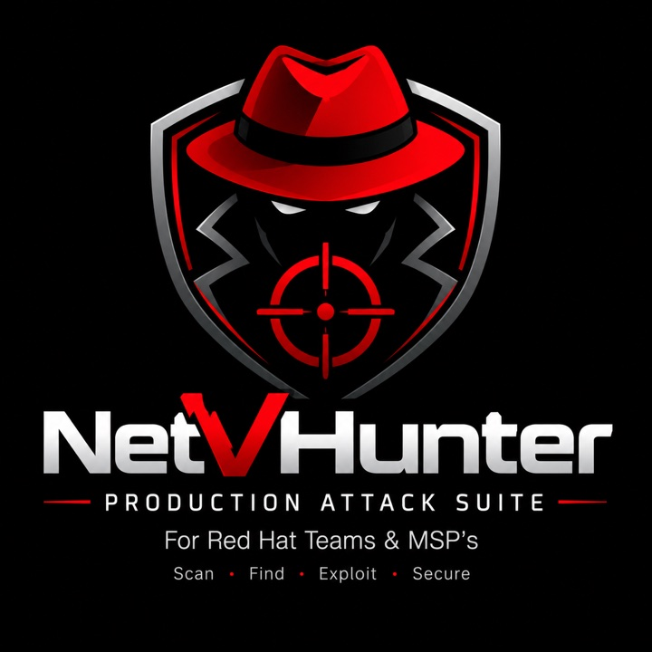

Evidence and operator notes live in different places, making an audit harder to follow and reproduce.
Early alpha / Active development
NetVHunter
A security audit platform for authorized red teams and managed service providers—designed to help operators discover, validate, organize, and report meaningful findings from one deliberate environment.
- Early alpha
- Current stage
- 3 runs
- Findings verified
- Active
- Stabilization

01 / Case study overview
A clearer path from audit signal to actionable evidence.
The product
NetVHunter is an early-alpha security audit platform for authorized red teams and managed service providers. It is being built to organize discovery, evidence review, controlled validation, and reporting within one focused workflow.
- My role
- Product design and engineering
- Audience
- Authorized security teams and MSPs
- Stage
- Private early alpha
- Current proof
- Three verified end-to-end runs
02 / The problem
Audit work becomes fragmented too quickly.
The challenge
Security professionals frequently move between separate discovery tools, raw outputs, validation notes, and reporting systems. Context can be lost between those steps, repetitive work grows, and unverified signals can be difficult to distinguish from findings that are ready for remediation.
Raw signals still require expert review before they should be treated as meaningful security findings.
Technical observations must be translated into clear impact and remediation guidance for other teams.
03 / The approach
An audit workspace built around evidence.
Design direction
NetVHunter does not replace professional judgment. The product direction is to reduce repetitive work, preserve the evidence behind each observation, and keep operators in control of when a signal becomes a validated finding.
Map the environment
Organize approved targets and collect the technical signals needed to understand the audit surface.
Prioritize findings
Bring related evidence together so operators can separate meaningful risks from background noise.
Confirm what is real
Support controlled checks that help verify a suspected issue before it is treated as a confirmed finding.
Explain the impact
Turn technical evidence into traceable findings and remediation guidance that teams can act on.
NetVHunter is designed only for systems the operator owns or has explicit authorization to assess.
04 / Audit workflow
Scan. Find. Validate. Secure.
Scope
Define approved systems, boundaries, and audit objectives before the engine begins work.
Inspect
Collect and correlate relevant signals while preserving the context behind each observation.
Verify
Review evidence and perform controlled validation so unconfirmed signals are not overstated.
Report
Package confirmed findings with evidence, impact, and practical remediation priorities.
05 / Validation and learning
Promising results, measured honestly.
3
separate end-to-end audit runs completed successfully
✓
reported findings independently checked and confirmed
These controlled runs show that the core engine can complete its intended workflow and produce useful findings. They do not yet prove production readiness, broad environmental coverage, or long-term reliability.
The primary lesson is that stability must be protected while the product grows. Current engineering work favors repeatability, clear output, and careful bug fixes over rapidly adding more surface area.
06 / Responsible engineering
Powerful tooling needs responsible design.
Authorized by default
Scope awareness and explicit operator intent should be visible throughout the workflow.
Modular operations
Independent capabilities should connect through a consistent interface and shared context.
Clear reporting
Technical output becomes valuable when teams can understand, prioritize, and act on it.
07 / Development journal
Progress documented, not jumbled.
Each future development update will be added as its own dated entry. Open an entry to read the milestone, evidence, current work, and next objective.
October 2026 Core engine validated in early alpha
ALPHA LOG / UPDATE 001
The core audit engine completed three separate end-to-end runs. The findings produced during those runs were independently reviewed and confirmed to be accurate.
This is an important proof point, but not a production-readiness claim. Work is continuing on small bugs, repeatability, output quality, and maintaining engine stability as the product evolves.
- COMPLETECore engine operating end to end
- VERIFIEDFindings confirmed across three controlled runs
- ACTIVEBug fixes and consistency improvements
- NEXTBroader testing and workflow refinement
08 / Next steps
Working software.
Early-alpha discipline.
Next priorities are repeatable testing, stronger error handling, clearer audit output, and gradual workflow refinement without destabilizing the engine.
Return to portfolio →